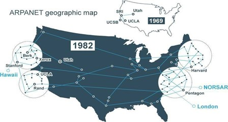
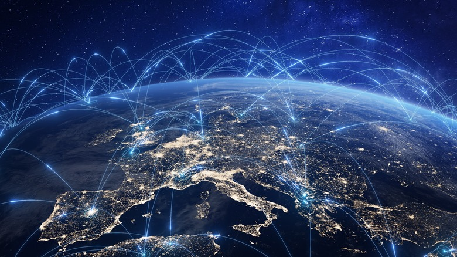

Internet är ett globalt nätverk av sammankopplade datorer som kommunicerar med hjälp av TCP/IP-protokollet. Ursprungligen utvecklades internet för militära och akademiska ändamål. På 1950-talet lades grunden för internet med datorernas utveckling, och 1969 togs de första konkreta stegen med ARPANET i USA. På 1980-talet expanderade nätverken till vetenskapliga ändamål genom NSFNET, och internet blev gradvis tillgängligt för kommersiellt bruk.
På 1970-talet skickades det första e-postmeddelandet, vilket gjorde internet till ett socialt kommunikationsverktyg. 1989 utvecklade Tim Berners-Lee World Wide Web (WWW), vilket revolutionerade informationsdelningen på internet. WWW möjliggjorde snabbare och enklare tillgång till information för internetanvändare.
Fram till 1998 blev internet tillgängligt i hushållen världen över. I Sverige skedde den första internetanslutningen 1988, och från mitten av 1990-talet började internet användas av allmänheten i stor skala. Detta underlättade informationsöverföring, marknadsföring och kommunikation på många olika områden.
På 1990-talet var internetanvändare mestadels passiva informationsmottagare (Web 1.0). Med Web 2.0 kunde användarna skapa och dela innehåll, vilket ledde till uppkomsten av sociala medier och interaktiva plattformar. Bloggar, sociala nätverk och andra interaktiva verktyg blev vanliga och förändrade hur vi använder internet.
Ny media inkluderar digitala medier som inte är begränsade till traditionella medieverktyg. Sociala medier är onlineplattformar där användare kan publicera och dela innehåll. Friends United, som grundades 1994, var den första sociala medieapplikationen och möjliggjorde användarinteraktion på internet.
Internetanslutningar kan vara trådbundna eller trådlösa. Trådbundna metoder inkluderar uppringda nätverk, ISDN, DSL, kabelinternet och fiberoptik. Trådlösa metoder omfattar Wifi, Bluetooth, WiBRo, WiMax, satellitinternet, Irda och Long Term. Dessa metoder förbättrar ständigt hastigheten och tillgängligheten för internet.
Internet möjliggör snabb tillgång till information, förenklar sociala kontakter och kommunikation, och skapar nya jobbmöjligheter. Det är också användbart inom utbildning och forskning.
Internet kan leda till beroende, problem med ögonhälsa, nervösa sjukdomar, ångest och depression. Internetberoende kan negativt påverka en persons sociala liv och dagliga funktioner.
Internetberoende innebär överdriven användning av internet som inte kan kontrolleras. Symtomen inkluderar försämrad social interaktion, rastlöshet och störda dagliga rutiner.
Internetberoende är kopplat till psykiatriska störningar som uppmärksamhetsstörning, depression och social fobi och kräver behandling. Beroende påverkar en persons dagliga liv och kommunikationsförmåga negativt
Internet har introducerat många nya begrepp och yrkesgrupper som ständigt utvecklas med teknologiska framsteg. Vi lever i en tid där kommunikation är enklare och snabbare än någonsin, men det är viktigt att använda internet på ett balanserat och medvetet sätt. Medan vi drar nytta av internets fördelar, måste vi vara uppmärksamma på dess negativa effekter och hantera dem ansvarsfullt. Internet är en oumbärlig del av vardagen och kommer att fortsätta att utvecklas i framtiden..
Internet har revolutionerat vårt samhälle genom att omforma hur vi kommunicerar, arbetar, och får tillgång till information. Det har främjat globaliseringen och skapat en mer sammankopplad värld. Samtidigt har internet gett upphov till nya utmaningar som integritetsfrågor, cyberbrott och digitalt utanförskap.
I framtiden kan vi förvänta oss att internet blir ännu mer integrerat i vår vardag genom utvecklingen av artificiell intelligens, sakernas internet (IoT), och 5G-teknologi. Dessa framsteg kommer sannolikt att förbättra effektiviteten i olika sektorer som hälso- och sjukvård, utbildning, och transport. Samtidigt kommer det att bli ännu viktigare att hantera frågor om cybersäkerhet och etisk användning av teknologin för att säkerställa att internets utveckling sker på ett hållbart och inkluderande sätt.
Det är avgörande att vi fortsätter att vara medvetna om både fördelarna och nackdelarna med internet, och att vi strävar efter att skapa en digital framtid som gynnar alla delar av samhället.
